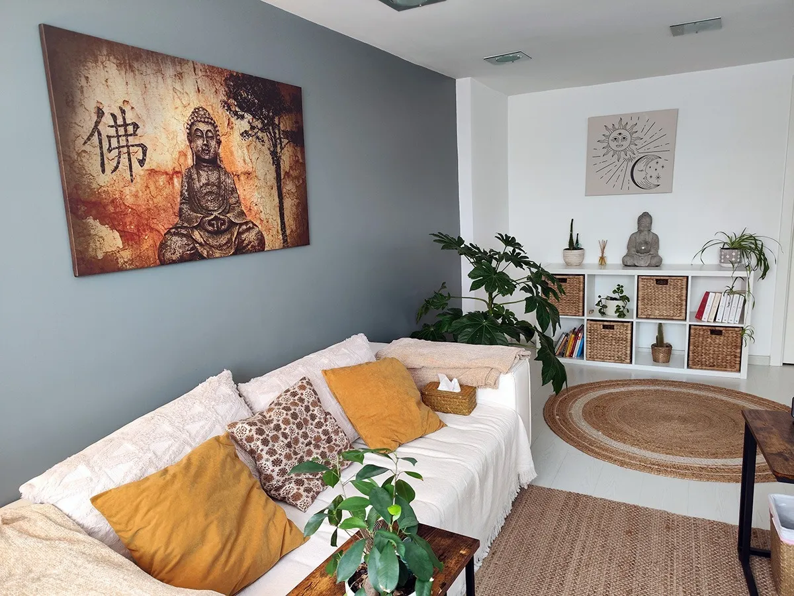

Acompañamos a terapeutas, facilitadores e proxectos de crecemento persoal e colectivo a usar a tecnoloxía con calma, con sentido e sen perder o humano.
Falemos do teu proxectoTEOTS AI é a rama tecnolóxica de TEOTS. Nace dunha pregunta sinxela: como pode a intelixencia artificial axudar a quen acompaña procesos de transformación, sen converterse no centro?
Cremos que a tecnoloxía pode liberar tempo e atención para o esencial: a presenza, a escoita e o encontro. Por iso deseñamos ferramentas pequenas, claras e feitas á medida, que se adaptan á forma de traballar de cada proxecto e non ao revés.
Traballamos desde a psicoloxía humanista e transpersoal, coa convicción de que todo proceso de crecemento é, ante todo, unha experiencia humana.

Ferramentas e acompañamento para que a túa enerxía vaia ao que importa.
Axuda para ordenar notas de sesións, grupos e retiros nun formato propio, sempre revisado e aprobado por ti.
Os teus textos, meditacións, audios e recursos organizados para atopar en segundos o que necesitas en cada momento.
Organización de inscricións, materiais e comunicación de retiros e talleres, cun ton coidado e coherente co teu proxecto.
Páxinas lixeiras, rápidas e fáciles de manter, sen capas innecesarias nin custos ocultos.
Sesións prácticas para profesionais do acompañamento: que pode facer a IA, que non debe facer e como usala con criterio.
Revisamos contigo como protexer a intimidade das persoas que acompañas antes de incorporar calquera ferramenta.
«A tecnoloxía ten sentido cando nos devolve tempo para estar presentes.»A mirada de TEOTS AI
A IA acompaña; a escoita, o criterio e as decisións seguen sendo humanos.
A información sensible trátase co mínimo imprescindible e, sempre que se pode, sen saír do teu equipo.
Nada chega a outra persoa sen que ti o leas e o aprobes.
Preferimos o pequeno que funciona hoxe ao grande que complica mañá.
TEOTS AI forma parte dun ecosistema de proxectos dedicados ao desenvolvemento da consciencia.
Se tes un proxecto de consciencia e queres saber como pode axudarche a tecnoloxía, escríbenos. Respondemos persoalmente.